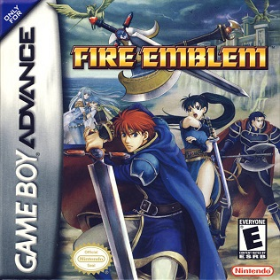

Game Boy Advance (GBA) adalah rumah bagi begitu banyak game legendaris yang mendefinisikan masa kecil banyak orang. Dari RPG epik hingga simulasi pertanian yang menenangkan, konsol genggam ini menawarkan pengalaman yang beragam dan mendalam. Mari kita selami beberapa judul terbaik yang pernah menghiasi layar GBA.
1. Harvest Moon: Friends of Mineral Town
Membangun kembali pertanian warisan kakek.
Ini bukan sekadar game bertani, ini adalah simulasi kehidupan yang adiktif. Anda mewarisi pertanian tua dan tugas Anda adalah mengembalikannya ke masa kejayaannya. Gameplay-nya kaya akan aktivitas: menanam berbagai jenis tanaman sesuai musim, merawat hewan ternak seperti sapi dan ayam, menambang bijih berharga, hingga memancing di sungai. Namun, daya tarik utamanya adalah interaksi dengan penduduk Mineral Town. Setiap karakter punya kepribadian, jadwal, dan cerita unik. Anda bisa berteman, memberikan hadiah, bahkan menikah dan membangun keluarga. Game ini mengajarkan kesabaran dan kepuasan dari kerja keras.
2. Lunar Legend
Kisah klasik tentang kepahlawanan dan persahabatan.
Lunar Legend adalah remake dari RPG klasik Sega CD, Lunar: The Silver Star, yang diadaptasi dengan indah untuk GBA. Game ini adalah JRPG tradisional dalam bentuk terbaiknya. Anda akan mengikuti perjalanan Alex, seorang pemuda dari desa kecil yang bercita-cita menjadi Dragonmaster seperti pahlawan masa lalunya, Dyne. Bersama teman masa kecilnya, Luna, dan makhluk bersayap misterius, Nall, petualangannya membawanya melintasi dunia yang luas. Dengan sistem pertarungan turn-based yang solid, cerita yang menyentuh hati tentang persahabatan dan pengorbanan, serta musik yang tak terlupakan, Lunar Legend adalah permata yang wajib dimainkan bagi para pencinta RPG klasik.
3. Fire Emblem: The Blazing Blade

Strategi, politik, dan ancaman kehilangan selamanya.
Ini adalah judul Fire Emblem pertama yang dirilis secara internasional, dan langsung menjadi hit. Game ini adalah mahakarya dalam genre strategy RPG. Anda berperan sebagai ahli taktik yang memimpin pasukan di medan perang berbasis grid. Setiap unit memiliki kelas, kekuatan, dan kelemahan yang unik. Kunci kemenangan terletak pada pemahaman sistem "segitiga senjata" (pedang mengalahkan kapak, kapak mengalahkan tombak, tombak mengalahkan pedang) dan penempatan unit yang cermat. Yang membuat game ini begitu menegangkan adalah fitur ikoniknya: permadeath. Jika sebuah unit gugur dalam pertempuran, mereka akan hilang selamanya. Ini menambah bobot emosional dan strategis pada setiap keputusan yang Anda buat.
4. Tactics Ogre: The Knight of Lodis
Kisah kelam dengan alur cerita yang bercabang.
Jika Fire Emblem adalah catur fantasi, Tactics Ogre adalah drama politik kelam yang dibalut dalam pertempuran taktis. Ceritanya jauh lebih dewasa, berfokus pada perang, pengkhianatan, dan ambiguitas moral. Anda bermain sebagai Alphonse, seorang ksatria yang dikirim ke pulau Ovis dan terjebak dalam konflik berdarah. Gameplay-nya sangat dalam, dengan sistem kelas yang kompleks, berbagai macam skill, dan medan pertempuran isometrik yang menantang. Salah satu fitur terbaiknya adalah alur cerita yang bisa bercabang tergantung pada keputusan penting yang Anda ambil, memberikan nilai replayability yang sangat tinggi.